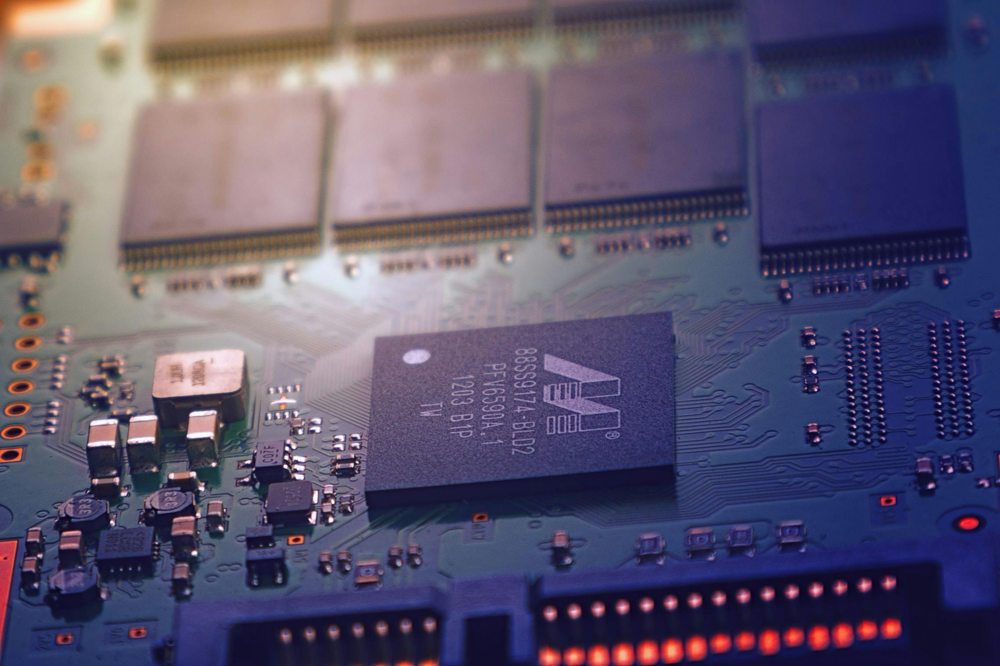

Cybertec Megarack 750 Mark V
Powerful datacenter server ready for deployment | Everything needed for operations including customization for your workloads.

Cybertec cares about your company and what keeps it functioning. A server is the most crucial tool for any company, whether big or small, and we keep this in mind. That’s why we created a server never seen before. What makes this server special is that it is specially designed to handle data processing, meaning that since it focuses on receiving and sending data, its performance is superior compared to the traditional servers that handle unnecessary functions on one server. Companies and corporations don’t like wasting time, which is why this server with racks and cabinets has been designed to be assembled in a short amount of time (2 hours!) which is a game changer for companies that are starting to implement servers. With the customization of the components, we can create specialized circuits and motherboards to handle the needed processing while leaving space for upgrades. A solution like this has never been created before, and Cybertec is proud to offer you the ultimate solution for datacenter servers!
Key Features and Specifications:
- Multi CPU slots up to 4 AMD CPU.
- Durable metal racks and cabinets to keep all the components in place. Carefully designed to facilitate routines of maintenance and upgrade procedures.
- Easy assembly procedures. With time kept in mind, you can assemble this rack in 2 hours, we provide both manuals and video instructions.
- Multi-Ram slots up to 8 DDR5 Ram Sticks.
- Fault tolerant chips. Our new solution to prevent server downtime!
- Massive storage able to handle 10 SSD hardrives simultaneously.
- Cooling solution using liquid cooling to handle heavy workloads
- Warranty for 5 years!
Contact a representative for more information. If you wish, ask us about our customization features!